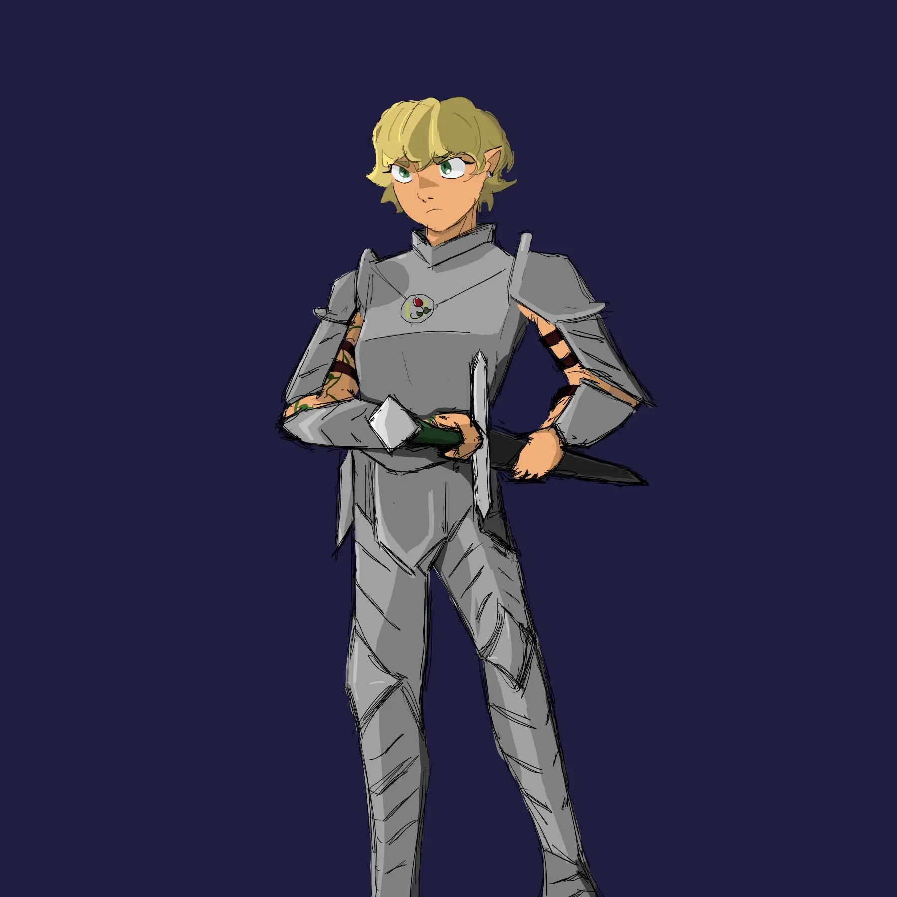

Ione of Dianthos

Name: Ione
Age: 24 years old
Race: Half Elf
Pronouns: She/Her
Class: Oath of Devotion Paladin
Home: Dukedom of Dianthos
Ione is an orphan who's currently got "it's complicated" as her facebook relationship status. I may be the reason behind that.
Backstory
Ione was born in the rural outskirts of Dianthos. Still an infant, she was taken in by a nearby sect of Chauntea
worshippers who raised her, alongside many other orphans, following the untimely deaths of their families to a local
plague.
At first, this was the only life that Ione would come to know; the dull monotony of the priory, and the peaceful, yet
achingly lonely plains it was built within.